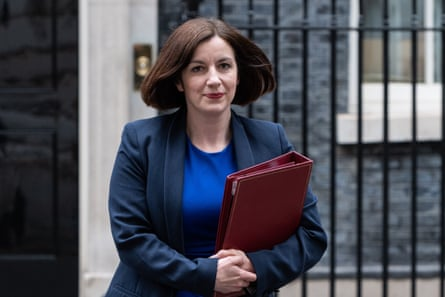

An increase in babies born to fathers over 60 helped trigger the first increase in the number of births in England and Wales since 2021.
Data from the Office for National Statistics (ONS) showed there were 594,677 live births in 2024, up 0.6% from 2023.
The birthrate remains historically low, with 2024 the third lowest total since 1977. But the small rise means the downwards trend seen in recent years may have come to a halt.
The largest increases in births were found in the West Midlands, up 3.4%, and London, up 1.8%, with five regions seeing a year-on-year fall, including a drop of 1.4% in the north-east.
The ONS said there was a “notable increase” in live births to fathers aged 60 and over, which jumped by 14%, from 942 births in 2023 to 1,076 in 2024.
Births to young mothers and fathers fell, continuing a long-term trend of the average age of parents rising steadily over the past 50 years.
Bridget Phillipson, the education secretary, has expressed concern over the falling birthrate.Photograph: Thomas Krych/ZUMA Press Wire/Shutterstock
The largest increase in live births was for women aged 35 to 39 years, which grew by 2.7%, while the largest decrease was seen in those aged under 20, declining by 4.6%.
Greg Ceely, the ONS’s head of population health monitoring, said: “The number of births to mothers under 30 fell, as people continue to put off having children until later in life.
“The largest decrease is seen among those under 20 years old, which fell by almost 5%, while the number of mothers aged 35 to 39 grew the most.”
On Monday, the education secretary, Bridget Phillipson, called on Britons to consider having more children and having them sooner, describing the “worrying repercussions” posed by a decline in fertility rates.
“A generation of young people have been thinking twice about starting a family, worried not only about rising mortgage and rent repayments, wary not only of the price of fuel and food, but also put off by a childcare system simultaneously lacking in places and ruinously expensive,” she wrote in the Daily Telegraph.
The data also showed that 39.5% of live births in England and Wales last year had either one or both parents born outside the UK, up from 37.3% in 2023 and 32.5% a decade earlier in 2014.
The ONS stressed the data did not give a full picture of a family’s ethnicity or migration history, or reflect any recent trends in immigration, as not all women born outside the UK would have arrived in the country in the past few years.